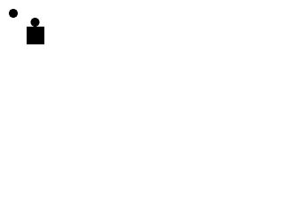
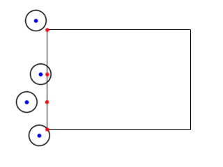
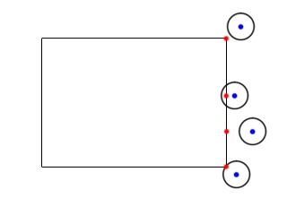
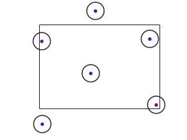

除了矩形外，你必须处理的最常见的形状就是圆形。在上一课中，我们必须在一个圆上使用11个碰撞盒子。本课将教给你一种更有效的处理圆形及碰撞检测的方法。
#include "SDL/SDL.h" #include "SDL/SDL_image.h" #include <string> #include <vector> #include <cmath>
本节课将要使用距离公式，所以我们包含了math头文件。
//表示一个圆形的结构体
struct Circle
{
int x, y;
int r;
};
在这个程序中，我们需要创建我们的Circle结构体。"x" 和 "y"是圆心的坐标。"r"是半径。
//点
class Dot
{
private:
//点的区域
Circle c;
//点的速度
int xVel, yVel;
public:
//初始化变量
Dot();
//处理按键并调整点的速度
void handle_input();
//移动点的位置
void move( std::vector<SDL_Rect> &rects, Circle &circle );
//在屏幕上显示点
void show();
};
这里是另一个版本的Dot类。
所有内容和之前的一样，除了两处不同。这次我们使用Circle结构体替代了SDL_Rect的向量。并且，在move()函数中我们检测了SDL_Rect的vector与Circle之间的碰撞。
所有内容和之前的一样，除了两处不同。这次我们使用Circle结构体替代了SDL_Rect的向量。并且，在move()函数中我们检测了SDL_Rect的vector与Circle之间的碰撞。
译者注：关于C++标准库中的向量vector，上一课中编者已作简单说明(点此回看)。这里重申一下，vector相当于数组。
double distance( int x1, int y1, int x2, int y2 )
{
//返回两点间的距离
return sqrt( pow( x2 - x1, 2 ) + pow( y2 - y1, 2 ) );
}
我们写的这个函数告诉我们给定两点间的距离。这是此程序中用到的唯一的真正的数学。
对于使用visual studio的小伙伴们来说，他们也许需要将那些整数转换成double类型。
对于使用visual studio的小伙伴们来说，他们也许需要将那些整数转换成double类型。
bool check_collision( Circle &A, Circle &B )
{
//如果两圆圆心间的距离小于两圆半径的和
if( distance( A.x, A.y, B.x, B.y ) < ( A.r + B.r ) )
{
//两圆已经碰到了一起
return true;
}
//如果不是
return false;
}
检测两圆之间的碰撞是非常简单的。你只需要检查一下两圆圆心的距离是否小于它们的半径之和。
如果是小于的话，碰撞发生，否则没有碰撞。
如果是小于的话，碰撞发生，否则没有碰撞。
bool check_collision( Circle &A, std::vector<SDL_Rect> &B )
{
//碰撞盒子上距离圆心最近的点的坐标
int cX, cY;
//遍历所有盒子
for( int Bbox = 0; Bbox < B.size(); Bbox++ )
{
这个函数检测圆与矩形向量之间的碰撞。检测一个圆与一个矩形之间的碰撞有点复杂。为了检测一个圆与一个碰撞盒子的碰撞，你必须找到碰撞盒子上距离圆心最近的点。
//寻找最近的x坐标
if( A.x < B[ Bbox ].x )
{
cX = B[ Bbox ].x;
}
如果圆心在盒子的左侧，那么最近点的x坐标等于碰撞盒子的x坐标。

else if( A.x > B[ Bbox ].x + B[ Bbox ].w )
{
cX = B[ Bbox ].x + B[ Bbox ].w;
}
如果圆心在盒子的右侧，那么最近点的x坐标等于碰撞盒子的右侧边的x坐标。

else
{
cX = A.x;
}
如果圆心坐标既不在碰撞盒子的左侧，又不在盒子右侧，那么圆心的x坐标就在盒子的内部。

//寻找最近的y坐标
if( A.y < B[ Bbox ].y )
{
cY = B[ Bbox ].y;
}
else if( A.y > B[ Bbox ].y + B[ Bbox ].h )
{
cY = B[ Bbox ].y + B[ Bbox ].h;
}
else
{
cY = A.y;
}
我们采用和上面一样的方法寻找最近的y坐标。
//如果最近点在圆的内部
if( distance( A.x, A.y, cX, cY ) < A.r )
{
//这个盒子和圆已经发生碰撞
return true;
}
}
//如果没有与这些形状碰撞
return false;
}
如果碰撞盒子上距离圆心最近的点在圆的内部，那么圆和盒子发生重叠。这里我们一直遍历所有的碰撞盒子直到发现一个碰撞，或者所有的盒子都被检查过并且未发生任何碰撞。
//构建形状
std::vector<SDL_Rect> box( 1 );
Circle otherDot;
//Set the shapes' attributes
box[ 0 ].x = 60;
box[ 0 ].y = 60;
box[ 0 ].w = 40;
box[ 0 ].h = 40;
otherDot.x = 30;
otherDot.y = 30;
otherDot.r = DOT_WIDTH / 2;
In the main() function we create the 2 shapes the Dot is going to interact with.
在
main()函数中，我们创建了2个将与点交互的形状。
//当用户还未推出
while( quit == false )
{
//启动帧计时器
fps.start();
//当有事件需要处理
while( SDL_PollEvent( &event ) )
{
//为点处理事件
myDot.handle_input();
//如果用户叉掉了窗口
if( event.type == SDL_QUIT )
{
//退出程序
quit = true;
}
}
//移动点
myDot.move( box, otherDot );
//用白色填充屏幕
SDL_FillRect( screen, ≻reen->clip_rect, SDL_MapRGB( screen->format, 0xFF, 0xFF, 0xFF ) );
//显示盒子
SDL_FillRect( screen, &box[ 0 ], SDL_MapRGB( screen->format, 0x00, 0x00, 0x00 ) );
//显示其他的点
apply_surface( otherDot.x - otherDot.r, otherDot.y - otherDot.r, dot, screen );
//显示我们的点
myDot.show();
//更新屏幕
if( SDL_Flip( screen ) == -1 )
{
return 1;
}
//捕获帧率
if( fps.get_ticks() < 1000 / FRAMES_PER_SECOND )
{
SDL_Delay( ( 1000 / FRAMES_PER_SECOND ) - fps.get_ticks() );
}
}
这里是main循环，和前面的基本相同。但我想指出一点。
当我们显示其他点时，我们并不将图片blit到点的坐标。因为那个坐标是圆心的坐标，所以我们必须将点的图像blit到左上角的位置。我们可以通过将坐标减去半径来完成这件事。
当我们显示其他点时，我们并不将图片blit到点的坐标。因为那个坐标是圆心的坐标，所以我们必须将点的图像blit到左上角的位置。我们可以通过将坐标减去半径来完成这件事。
译者注：其实我想说，经过几番纠结，我还是将“X out the window”直译为“叉掉窗口”算了……土一点算了，没必要装高大上……后面的都这样喽。